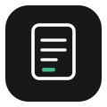
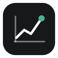
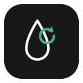

RAG · AI Agent 01JasoSupporter — 자소서·커리어 AI 코치
경험을 사실 단위로 구조화해 마스터 자소서·면접 답변으로 재사용하고, 로컬 파인튜닝 모델이 사용자 사실만으로 글쓰기를 돕는 Flutter + FastAPI 앱.
Qwen3-1.7B · QLoRA SFT
자세히 →
데이터 해석부터 서비스 구현까지 연결하는 사람
세종대학교에서 물리천문학과 소프트웨어학을 복수전공하며 데이터 분석과 머신러닝의 기본기를 다졌습니다. 모델 성능 수치에 그치지 않고, 어떤 데이터를 남기고 어떤 기준으로 해석해 의사결정에 사용할지 구조화하는 과정을 좋아합니다.
지금은 LLM·RAG·AI Agent를 중심으로, AI 모델과 데이터를 실제로 쓸 수 있는 end-to-end 서비스로 만드는 일에 집중하고 있습니다. 모델의 출력에서 끝내지 않고, 그 결과를 사용자가 실제로 쓰는 화면과 흐름까지 책임지는 것을 원칙으로 합니다.
지금 집중하는 것
카드를 클릭하면 검증·성과, 기술 스택, 구조, 링크를 볼 수 있습니다

RAG · AI Agent 01경험을 사실 단위로 구조화해 마스터 자소서·면접 답변으로 재사용하고, 로컬 파인튜닝 모델이 사용자 사실만으로 글쓰기를 돕는 Flutter + FastAPI 앱.

Data · ML 02환율·거시경제 데이터를 통합해 "지금 매수하면 6개월 뒤 연환산 7% 이상 수익이 기대되는가"를 판단하는 Transformer 기반 이진 분류 모델.

AI Service · Flutter 03디바이스와 연동해 모발·두피 상태를 측정하고, 상태·환경 정보를 바탕으로 리프레시 모드를 추천하며 사용 기록을 관리하는 Flutter 앱.
주력(Main)과 보조(Secondary)로 나눈 기술 스택
Language
AI & Data
App & Service
Workflow
Languages
Frameworks & Tools
데이터와 AI를 실제 서비스로 연결하는 일에 늘 열려 있습니다. 편하게 연락 주세요.